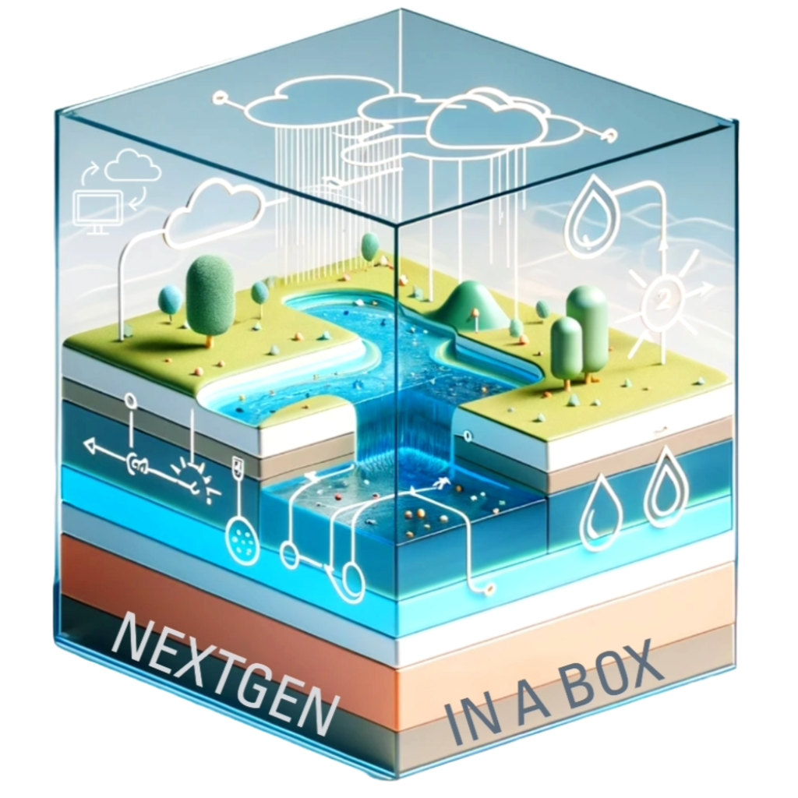

CIROH DocuHub
Welcome to CIROH's DocuHub – a carefully curated central repository providing in-depth technical insights into CIROH's projects, services, and documentation. This invaluable resource is designed to empower team members, collaborators, and community stakeholders with the knowledge needed to enhance their understanding and contributions. Explore DocuHub to deepen your understanding and actively engage in our collaborative learning culture.
Documentation
Dive into our comprehensive documentation to access in-depth information about various CIROH products, including but not limited to NextGen, Snow model, Tethys, and more.
Cloud Services
Explore our array of cloud services and offerings, where you can delve into the specifics of CIROH-AWS cloud. Learn how to gain access to this cloud infrastructure and uncover insights into working seamlessly with the 2i2c cloud services.
Training
Elevate your expertise through our training programs. Delve into our tutorials and educational resources, covering topics such as the NextGen framework, Data Science model, and more.
- 
NextGen In A Box
Utilize NextGen In A Box (NGIAB) to locally run NextGen framework. Choose specific regions or basins for analysis, control input data, and modify confiurations, all within a containerized environment.

AWS
Leverage the power of CIROH AWS Account to elevate your hydrological research. Get access to enterprise-level AWS cloud platform, and utilize AWS computing resources and scalable storage for your research.
Google Cloud
Explore different services and tools offered by CIROH Google Cloud. Learn how to access Google Cloud Platform (GCP) and leverage its resources for your research and projects.
Documentation
Dive into our comprehensive documentation to access in-depth information about various CIROH products, including but not limited to NextGen, Snow model, Tethys, and more.
Cloud Services
Explore our array of cloud services and offerings, where you can delve into the specifics of CIROH-AWS cloud. Learn how to gain access to this cloud infrastructure and uncover insights into working seamlessly with the 2i2c cloud services.
Training
Elevate your expertise through our training programs. Delve into our tutorials and educational resources, covering topics such as the NextGen framework, Data Science model, and more.
CONTRIBUTE
We would like CIROH Consortium members to contribute to CIROH DocuHub. Please contribute by adding product/project documentation, tutorials, training data, or conference presentations. The CIROH DocuHub repository provides a collaborative platform for sharing project's technical documentation. Learn more about how you can contribute and access the CIROH DocuHub repository here:
Why DocuHub? Elevate Your Research Journey
Knowledge Hub

Access a centralized repository of research and educational resources to enhance your hydrological expertise.
Research & Growth

Explore cutting-edge research and innovative projects driving innovation in hydrology.
Blog & News

Stay updated with the latest news, community insights, and updates about CIROH projects.
Education & Training

Elevate your skills with tutorials, training programs, and educational materials tailored for hydrological research.
CyberInfrastructure

Leverage cloud infrastuctures, including AWS, GCP, CIROH JupyterHub, and on-premises infrastructures tailored to hydrological research needs.
Global Collaboration

Join a global network of researchers and collaborators to share knowledge, resources, and innovations within the CIROH community.


.webp)